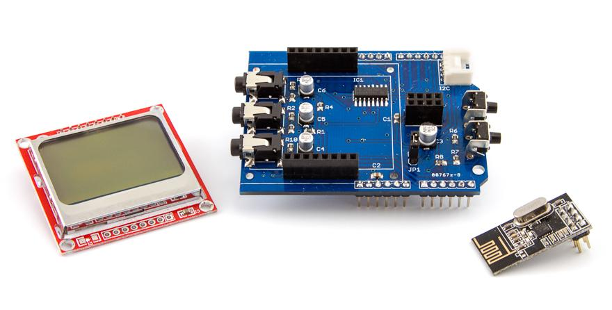
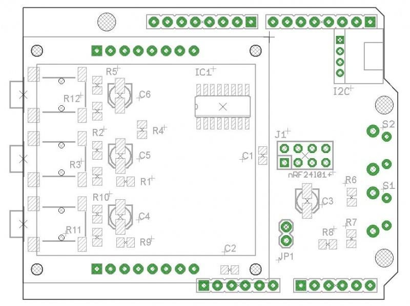

Energy Monitor Shield is an Arduino-compatible expansion card designed for building energy monitoring system with LCD screen and an interface for connecting the wireless transceiver nRF24L01 +.
Model: 830070001


The left side of EM Shield are three connectors for current sensors, right - connector for LCD-screen.
Jumper JP1 is used to enable / disable real-backlight LCD-screen.
In the upper right corner - I2C-connector.
On the right are two buttons (labeled S1 and S2).
In the center of the board (just to the right LCD-screen) - connector for nRF24L01 +.
In the basic version (without using Ethernet Shield) may organize monitoring of energy consumption in three different circuits using current sensors.
Information about the current level of consumption can be displayed on the LCD screen.
Device Management can be organized using two buttons on the Shield.
The obtained data can be transmitted by the transceiver nRF24L01 +.
Additionally EM Shield can connect any device using i2c Grove-compatible connector (sensors, displays, etc.). EM Shield was designed to be fully compatible with the Ethernet Shield (Wiznet 5100 + SD) - so you can use these two Shields together to create even more advanced device monitoring electricity (logging on SD-card and presenting data on a web page).
To use Energy Monitor Shield requires the following libraries:
API
Requires the libraries that are used when working RF24 and LCD-display:
Library has used examples of them just to understand how they work.
Initialization RF-module as follows:
... //RF24 radio(CE,CSN); RF24 radio(7,8); ...
Initialize LCD-display is as follows:
... //LCD5110 myGLCD(DC,RST,CS); LCD5110 myGLCD(5,6,3); ...
#include <SPI.h>
#include <LCD5110_Graph_SPI.h>
#include "EmonLib.h"
#define WINDOW 15
#define DELTA 1500
EnergyMonitor emon1;
double sIrms;
float Pcur;
float Pmax;
float Pmin=100;
LCD5110 myGLCD(5,6,3);
extern unsigned char SmallFont[];
unsigned long measureTime;
boolean flag=false;
double delta=0;
#define DELTAMEASURE 30000
void setup(void)
{
myGLCD.InitLCD(70);
myGLCD.setFont(SmallFont);
myGLCD.update();
emon1.current(0, 111.1); // Current: input pin, calibration.
double Irms[WINDOW];
// Calibrate (find offset)
double cIrms = 0;
flag = false;
while (!flag) {
myGLCD.print("calibrating", 0, 0);
myGLCD.update();
Irms[0] = emon1.calcIrms(1480); // the first value in the measurement obviously "crooked"
//Serial.println("calculate delta");
for (int i=0; i<WINDOW; i++) {
Irms[i] = emon1.calcIrms(1480);
cIrms = cIrms + Irms[i];
delay(100);
}
delta = cIrms/WINDOW;
flag = true;
}
//myGLCD.print(" ready", 0, 0);
//myGLCD.update();
}
void loop(void)
{
// write the current value
sIrms = emon1.calcIrms(1480) - delta; // Calculate Irms only
sIrms = abs(sIrms);
Pcur = sIrms*0.220;
// the received data is printed
char tbuf[6];
dtostrf(Pcur,5,5,tbuf);
myGLCD.print(tbuf, 0, 0);
dtostrf(analogRead(A3),4,0,tbuf);
myGLCD.print(tbuf, 30, 15);
myGLCD.update();
delay(250);
}
/* This example code is in the public domain. */ #include <SPI.h> #include <MySensor.h> // Include MySensors.org Library V1.5 #include "EmonLib.h" // Include Emon Library #include <LCD5110_Graph_SPI.h> // Include NOKIA5110 Library #define CHILD_ID_POWER 0 EnergyMonitor emon; LCD5110 myGLCD(5,6,3); extern unsigned char SmallFont[]; MyTransportNRF24 transport(7, 8); //for EMv1 MySensor gw(transport); unsigned long lastSend; unsigned long SEND_FREQUENCY = 20000; // Minimum time between send (in milliseconds). We don't wnat to spam the gateway. float Irms; float lastIrms = -99; char tbuf[8]; char sbuf[12]; MyMessage IrmsMsg(CHILD_ID_POWER, V_KWH); void setup() { myGLCD.InitLCD(); myGLCD.setFont(SmallFont); myGLCD.update(); // The third argument enables repeater mode. gw.begin(NULL, AUTO, true), gw.sendSketchInfo("Energy Monitor v1", "1.0"); // emon.current(0, 111.1); // Current: input pin, calibration. emon.current(0, 66.5); // Register all sensors to gw (they will be created as child devices) gw.present(CHILD_ID_POWER, S_POWER); } void loop() { gw.process(); unsigned long now = millis(); double Irms = emon.calcIrms(1480); // Calculate Irms only float realIrms = emon.Irms*220; //extract Real Power into variable if (realIrms != lastIrms) { gw.send(IrmsMsg.set(realIrms, 1)); //send to gateway lastIrms=realIrms; } dtostrf(realIrms,5,2,tbuf); sprintf(sbuf, " %s kWt", tbuf); myGLCD.print(sbuf, 20, 0); myGLCD.print("Powr:", 0, 0); dtostrf(Irms,5,2,tbuf); sprintf(sbuf, " %s Amp", tbuf); myGLCD.print(sbuf, 20, 10); myGLCD.print("Irms:", 0, 10); myGLCD.update(); Serial.print("Power: "); Serial.println(realIrms); gw.sleep(SEND_FREQUENCY); }
| Revision | Description | Release |
| 1.0 | Public version | 01.04.2014 |
| 0.9b | Public version (Not produced) | 20.10.2013 |
| 0.9 | Prototype | 10.09.2013 |
This product can be purchased:
This documentation is licensed under the Creative Commons Attribution-ShareAlike License 3.0 Source code and libraries are
licensed under GPL/LGPL, see source code files for details.
{kind=link}